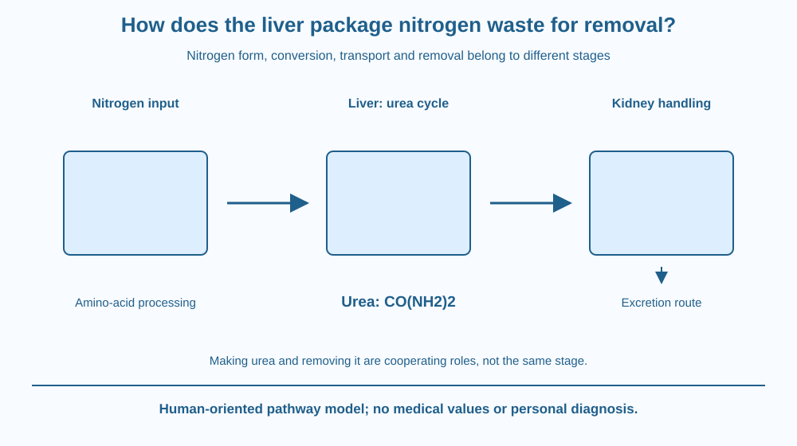

Explain why nitrogen from amino-acid processing needs a disposal route. Identify the liver's urea cycle and distinguish making urea from excreting it. Keep the account at a biological-mechanism level without using it to interpret a personal medical test or prescribe a diet.
Proteins contain nitrogen as well as carbon, hydrogen, oxygen and other possible elements. When the body processes amino acids, their nitrogen cannot simply be ignored in an energy story.
Some processing can produce ammonia-related nitrogen that requires controlled handling. The liver converts much of this nitrogen into urea, which can travel in solution toward excretion.
The useful question is where the waste form is made and how it reaches removal. A kidney diagram alone would miss the important chemical work that occurs before the material arrives there.
Amino acids are building units of proteins and can be processed in several ways. When amino nitrogen is removed or transferred during metabolism, it contributes to the body's nitrogen-waste handling requirements.
Ammonia and its related ammonium form can arise in this processing. Accumulation must be controlled because high amounts can disrupt normal physiology. This statement explains a biological need, not a threshold for diagnosing an individual.
The liver carries out a sequence called the urea cycle, which packages much nitrogen into urea. Urea has the formula CO(NH2)2. The cycle is an organised set of enzyme-mediated steps, not simply two free ammonia molecules colliding and automatically becoming urea in a jar.
The process combines nitrogen inputs with carbon-containing material and requires energy. We do not repeat the earlier ATP-production pathway or protein synthesis mechanism. The new focus is conversion of a nitrogen-waste problem into a transportable excretion form.
Urea is relatively suitable for transport in aqueous body fluids compared with allowing unrestricted ammonia accumulation. It enters circulation and reaches the kidneys, where renal handling contributes to its eventual excretion in urine.
The liver makes much of the urea, while the kidneys handle and remove it as part of their wider work. These are cooperating roles rather than interchangeable names for one organ. A later lesson examines filtration and reabsorption in the nephron separately.
Not all nitrogen leaves every animal as urea. Different groups use different strategies, including ammonia or uric-acid-based excretion. The human-focused model should not become a universal claim about fish, birds and all other organisms.
Actual urea production and measured concentrations depend on several physiological conditions. This lesson provides no daily production statistic, laboratory reference range or health interpretation. A classroom pathway cannot determine a person's liver or kidney function.
Draw a material-accounting chain from amino-acid processing to nitrogen handling, liver conversion, transport and renal excretion. Keep each stage in its appropriate organ or fluid context.
Use a different symbol for the chemical form before and after the liver's conversion step. The nitrogen remains accounted for, but the molecule carrying it changes. Do not draw waste disappearing into nothing.
Then place a boundary around the kidney stage. It receives material that already includes urea; it is not labelled the only location where every nitrogen transformation occurs. The chain explains why organ cooperation is essential to the whole process.
The SVG shows nitrogen from amino-acid processing entering a liver-labelled conversion region, followed by urea in a transport route toward kidneys and excretion. A separate formula card identifies urea.
Arrows distinguish chemical conversion from movement and removal. No numerical production rates or personal test values appear. The organs are simplified symbols, not detailed anatomical drawings.
The caption notes that this is a human-oriented nitrogen-disposal model and that animal strategies vary. It does not repeat digestion, blood-pumping mechanics or the complete nephron mechanism planned later.

Medical reports can mention urea, but the meaning of an individual's result depends on clinical context and other evidence. Understanding the pathway is educational background, not permission to interpret or change treatment.
In a school biology discussion, distinguishing liver conversion from kidney removal helps prevent the common statement that the kidneys simply manufacture all urinary substances. Excretion routes can include materials formed elsewhere.
No body-fluid sample, dietary experiment or test strip is needed. Students in India can use paper symbols and organ labels to learn the specific mechanism safely without creating a personal health investigation.
Use paper and three colours for nitrogen input, urea and organ roles.
Do not use real biological samples or make a health judgement from the drawing. Ask a partner to identify what would be missing if the liver-conversion box were omitted. The activity tests material and role accounting rather than memorisation of a generic organ list.
Why is changing the waste's chemical form useful before transport and removal? Explain the difference between moving a material and transforming it.
Now imagine a report drawing only kidneys and an output arrow. Which earlier stage of nitrogen handling has been hidden? A useful excretion model can begin before the material reaches the organ that finally contributes to its removal.
Which organ carries out the main urea-cycle conversion in this human model?
Answer: A — The liver packages much amino-acid nitrogen into urea through the urea cycle.
Why distinguish urea formation from excretion?
Answer: C — Urea can be formed in the liver and later handled by the kidneys for excretion.
A diagram says every animal excretes nitrogen only as urea. What needs correction?
Answer: B — Ammonia and uric-acid-based routes are among other nitrogen-excretion strategies.
Create a nitrogen-disposal map with chemical form, conversion location, transport and removal. Include the urea formula and a note that other animals can use different waste strategies.
Add a clear limit stating that no personal laboratory value is being interpreted. Your map should distinguish organ roles without describing urine as simply filtered unchanged food or claiming that the kidney makes every waste molecule it excretes.
A waste pathway can involve useful chemistry before the final exit. The body does not only move an unwanted substance toward a drain; it can change the form in which an element is carried. Following nitrogen makes that cooperative process visible across otherwise separate organ diagrams.
The liver converts much amino-acid nitrogen into urea through the urea cycle, then transport and kidney handling connect that chemical packaging to excretion.